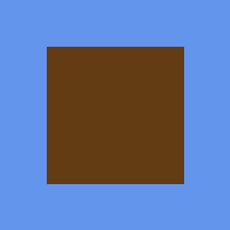

Tutorial 55: DualTextureEffect for Lightmaps
What you’ll learn
- Feeding two textures to
DualTextureEffectviaTextureandTexture2. - Why neither XNA nor CNA ships a dual-texture vertex type, and how to declare the second UV set yourself.
- The baked-lightmap workflow, and where the effect runs out of road.
Before you start — Tutorial 36: Texturing 3D Models (textured meshes) and Tutorial 51: Custom Vertex Types (a second UV channel is a vertex layout question). Requires a 3D-capable renderer such as OPENGLES3 or VULKAN; the eleven 2D-only renderers (SDL_RENDERER, DIRECT2D, CANVAS, HTML_DOM, SKIA, BLEND2D, FREEDIRECT, DIRECTX1, GDI, SVG_DOM, OPENVG) throw on 3D calls.
Lightmapping is one of the oldest and most effective techniques for delivering high-quality static lighting at minimal runtime cost. The idea is to precompute all indirect illumination, soft shadows, and ambient occlusion offline, bake the result into a second texture (the lightmap), and then multiply it into the diffuse albedo during rendering. CNA's built-in DualTextureEffect implements exactly this pipeline in a single shader pass, supporting two independent UV channels, optional per-vertex colour modulation, and fog.
DualTextureEffect Overview
DualTextureEffect combines two Texture2D objects in a single fragment shader pass. The first texture is the surface's diffuse albedo — the colour of the material under white light. The second texture is the precomputed lightmap. The fragment shader multiplies them together:
// Core of DualTextureEffect fragment shader (simplified)
vec4 albedo = texture(u_texture, v_texcoord1);
vec4 lightmap = texture(u_texture2, v_texcoord2);
fragColor = albedo * lightmap * u_diffuseColor;This multiplication is physically motivated: a surface that reflects a fraction of incoming light, when lit by a certain intensity, outputs the product of the two. Because the lightmap stores pre-integrated radiance (often encoded in a gamma-compressed format), the multiplication should happen in linear colour space for physical correctness — CNA applies gamma decoding automatically when the textures are created with SurfaceFormat::Color and the effect's linear-space flag is enabled.
The key performance advantage of DualTextureEffect over a per-pixel lighting effect is that there are no light direction calculations at runtime. The GPU simply samples two textures and multiplies — this is an extremely fast path even on low-end mobile GPUs.
Texture and Texture2 Properties
The two textures are set via separate setter methods:
setTextureProperty(Texture2D*)— the primary (albedo) texture. Sampled using the first UV channel (v_texcoord1fromTextureCoordinatein the vertex struct). This should be a tiling, detail-rich albedo map.setTexture2Property(Texture2D*)— the secondary (lightmap) texture. Sampled using the second UV channel (v_texcoord2fromTextureCoordinate2). This is a unique (non-tiling) atlas per mesh or per room, produced by an offline lightmapper.
Both textures use their own independent UV sets stored in the vertex buffer. The albedo UV typically tiles across the surface (a brick texture repeated many times), while the lightmap UV covers the [0, 1] range exactly once across the entire mesh, ensuring each texel in the lightmap corresponds to a unique surface point.
dualEffect_->setTextureProperty(&diffuseTex_); // albedo (tiling)
dualEffect_->setTexture2Property(&lightmapTex_); // lightmap (unique UV)Supplying two UV sets
There is no built-in dual-texture vertex type — not in CNA, and not in Microsoft XNA 4.0 either. CNA ships VertexPositionColor, VertexPositionTexture, VertexPositionColorTexture, VertexPositionNormalTexture, VertexPositionNormalTangentTexture and the two …Skinned variants. A second UV channel is something you declare yourself, exactly as CNA's own XNA oracle tool does for its dual-texture reference scenes.
The simplest route is the one CNA's own vulkan_dual_texture_test and bgfx_dual_texture_test take: use the stock VertexPositionTexture and let both stages sample the same UV set. That is enough whenever the lightmap shares the albedo's parameterisation, and it needs no custom declaration at all.
When the lightmap genuinely needs its own unique-per-surface UVs, declare a custom vertex type — see Tutorial 51: Custom Vertex Types for the full mechanics. The layout below matches the one the oracle tool uses, so it is known to round-trip against real XNA output:
// Your own struct -- neither XNA nor CNA provides this.
// Stride 28: Position(0) + UV0(12) + UV1(20).
struct VertexPositionDualTexture {
Vector3 Position;
Vector2 TextureCoordinate0; // albedo, may tile
Vector2 TextureCoordinate1; // lightmap, unique across the mesh
static VertexDeclaration Declaration()
{
return VertexDeclaration({
VertexElement(0, VertexElementFormat::Vector3,
VertexElementUsage::Position, 0),
VertexElement(12, VertexElementFormat::Vector2,
VertexElementUsage::TextureCoordinate, 0),
VertexElement(20, VertexElementFormat::Vector2,
VertexElementUsage::TextureCoordinate, 1),
});
}
};The two TextureCoordinate elements differ only in their usage index (0 and 1) — that index is what routes each one to its shader input. Filling and uploading a buffer then looks like any other custom vertex type:
const VertexPositionDualTexture verts[] = {
// { Position, UV0 (albedo), UV1 (lightmap) }
{ Vector3(-5, 0, -5), Vector2(0, 4), Vector2(0, 0) },
{ Vector3( 5, 0, -5), Vector2(4, 4), Vector2(1, 0) },
{ Vector3( 5, 0, 5), Vector2(4, 0), Vector2(1, 1) },
{ Vector3(-5, 0, 5), Vector2(0, 0), Vector2(0, 1) },
};
// The albedo UV runs 0..4 for a 4x repeat; the lightmap UV stays inside [0,1]
// so every texel maps to exactly one point on the surface.
auto vb = std::make_unique<VertexBuffer>(
gd,
VertexPositionDualTexture::Declaration(),
4,
BufferUsage::WriteOnly
);
// SetData is overloaded only for the stock vertex types; a custom struct
// goes through SetDataRaw, which takes an explicit stride.
vb->SetDataRaw(verts, 4, sizeof(VertexPositionDualTexture));Adding per-vertex colour for VertexColorEnabled is the same exercise: insert a Color field after Position, declare it with VertexElementFormat::Color and VertexElementUsage::Color, and shift the two UV offsets by four bytes.
Baked Lightmap Workflow
Creating a lightmap involves an offline rendering step. The typical workflow for a CNA project:
- Model your scene in Blender (or any DCC tool). Ensure all static geometry has a second UV channel (UV2) that is "unwrapped for lightmapping" — no overlapping faces, each polygon occupies a unique region of [0,1] texture space.
- Bake the lightmap using Blender's Cycles bake system (or a dedicated lightmapper such as The Lightmapper, Bakery, or xatlas + custom ray tracer). Bake to an RGBA image at 1024×1024 or 2048×2048 depending on scene scale. Save as PNG.
- Export assets — export the mesh with both UV channels to OBJ or FBX. Export the baked lightmap PNG.
- Import into CNA — CNA’s content loader ingests the mesh and preserves the second UV channel as
TextureCoordinate2in the vertex data. Load the lightmap texture normally viagetContentProperty().Load<Texture2D>.
A common mistake is to use overlapping UVs in the lightmap channel (the same UV layout as the albedo, which tiles). This causes every surface that shares the same albedo UV region to also share the same lightmap texel, producing incorrect lighting where every face appears to have identical shadow patterns. Always create a dedicated non-overlapping UV unwrap for the lightmap channel.
Combining Diffuse and Lightmap
The fragment-level combination used by DualTextureEffect is a simple multiply. In mathematical terms:
// Inside DualTextureEffect — both textures sampled and multiplied
vec4 c1 = texture(u_texture, v_texcoord1);
vec4 c2 = texture(u_texture2, v_texcoord2);
vec4 result = c1 * c2 * u_diffuseColor;
// Optional vertex colour modulation
#ifdef VERTEX_COLOR_ENABLED
result *= v_vertexColor;
#endif
fragColor = result;The lightmap values are typically in the range [0, 1], where 0 represents full shadow and 1 represents maximum direct illumination. Clamp the lightmap to [0, 1] during export from the baking tool.
HDR lightmaps are not available. Only SurfaceFormat::Color constructs in CNA today — Texture::ValidateFormat throws std::runtime_error for every other SurfaceFormat, including HdrBlendable. If your baking tool produces values above 1.0, encode them into RGBA8 before import: divide by a known exposure constant, or use an RGBM-style scheme storing a shared multiplier in the alpha channel and undoing it in the shader.
A common refinement is to store ambient occlusion in the lightmap's alpha channel and multiply it separately, giving you AO as a distinct scalar at no additional texture cost.

DualTextureEffect with both texture stages bound: the output colour is the per-channel product of the two samples, which is why it lands well below the brightness of either input. This is genuine Microsoft XNA 4.0 runtime output from CNA's oracle corpus (tools/xna-oracle/), diffed against CNA's DIRECTX9 renderer at --tolerance 0.
Limitations
DualTextureEffect provides static lighting only. The lightmap is baked once offline. Dynamic objects (characters, moving platforms, projectiles) cannot participate in lightmapped lighting — they require a separate dynamic lighting effect. Moving static geometry invalidates the bake.
- No dynamic lights: Point lights, spotlights, and other dynamic light sources are not reflected by the lightmap unless you re-bake. For mixed static + dynamic lighting use a combination of lightmaps (for static light) and a custom effect with runtime light evaluation (for dynamic light).
- Re-bake on geometry change: If a wall moves by even one unit, the lightmap shadows become incorrect. Lightmaps are appropriate for fully static environments.
- Memory overhead: A 2048×2048 RGBA lightmap consumes 16 MB of VRAM. Large open worlds require lightmap atlasing across multiple textures.
- No animated lightmaps: You cannot smoothly interpolate between two baked lightmaps at runtime within
DualTextureEffect— that requires a custom effect with two samplers and a lerp uniform.
Complete Example: Lightmapped Room
class LightmapGame final : public Game {
std::unique_ptr<DualTextureEffect> dualEffect_;
Texture2D diffuseTex_;
Texture2D lightmapTex_;
std::unique_ptr<VertexBuffer> roomVB_;
std::unique_ptr<IndexBuffer> roomIB_;
int vertexCount_ = 0;
int indexCount_ = 0;
Camera camera_;
void LoadContent() override {
auto& gd = getGraphicsDeviceProperty();
diffuseTex_ = getContentProperty().Load<Texture2D>("textures/brick_albedo");
lightmapTex_ = getContentProperty().Load<Texture2D>("textures/room_lightmap");
dualEffect_ = std::make_unique<DualTextureEffect>(gd);
dualEffect_->setTextureProperty(&diffuseTex_);
dualEffect_->setTexture2Property(&lightmapTex_);
dualEffect_->setVertexColorEnabledProperty(false);
dualEffect_->setDiffuseColorProperty(Vector3(1.0f, 1.0f, 1.0f));
// Enable fog for depth cueing
dualEffect_->setFogEnabledProperty(true);
dualEffect_->setFogColorProperty(Vector3(0.1f, 0.1f, 0.12f));
dualEffect_->setFogStartProperty(15.0f);
dualEffect_->setFogEndProperty(50.0f);
BuildRoomGeometry(gd);
}
void BuildRoomGeometry(GraphicsDevice& gd) {
// Six-sided room: floor, ceiling, four walls
// Each face has albedo UVs tiling 4x and unique lightmap UVs
std::vector<VertexPositionDualTexture> verts;
std::vector<uint16_t> indices;
auto addQuad = [&](Vector3 a, Vector3 b, Vector3 c, Vector3 d,
float uvScale, Vector2 lm0, Vector2 lm1,
Vector2 lm2, Vector2 lm3) {
uint16_t base = (uint16_t)verts.size();
verts.push_back({ a, Vector2(0, uvScale), lm0 });
verts.push_back({ b, Vector2(uvScale,uvScale), lm1 });
verts.push_back({ c, Vector2(uvScale,0 ), lm2 });
verts.push_back({ d, Vector2(0, 0 ), lm3 });
indices.insert(indices.end(),
{ base, (uint16_t)(base+1), (uint16_t)(base+2),
base, (uint16_t)(base+2), (uint16_t)(base+3) });
};
// Floor (y=0), lightmap occupies top-left quarter of the atlas
addQuad(
{-5,0,-5}, { 5,0,-5}, { 5,0, 5}, {-5,0, 5}, 4.0f,
{0,0}, {0.5f,0}, {0.5f,0.5f},{0,0.5f}
);
// ... add remaining faces similarly ...
vertexCount_ = (int)verts.size();
indexCount_ = (int)indices.size();
roomVB_ = std::make_unique<VertexBuffer>(
gd, VertexPositionDualTexture::Declaration(),
vertexCount_, BufferUsage::WriteOnly);
roomVB_->SetDataRaw(verts.data(), vertexCount_, sizeof(VertexPositionDualTexture));
roomIB_ = std::make_unique<IndexBuffer>(
gd, IndexElementSize::SixteenBits,
(int)indices.size(), BufferUsage::WriteOnly);
roomIB_->SetData(indices.data(), (int)indices.size());
}
void Draw(const GameTime&) override {
auto& gd = getGraphicsDeviceProperty();
gd.Clear(Color::Black);
dualEffect_->setWorldProperty(Matrix::getIdentityProperty());
dualEffect_->setViewProperty(camera_.View());
dualEffect_->setProjectionProperty(camera_.Projection());
gd.SetVertexBuffer(roomVB_.get());
gd.SetIndexBuffer(roomIB_.get());
for (auto& pass : dualEffect_->getCurrentTechniqueProperty()->getPassesProperty()) {
pass.Apply();
gd.DrawIndexedPrimitives(
PrimitiveType::TriangleList,
0, 0, vertexCount_, 0, indexCount_ / 3);
}
gd.Present();
}
};